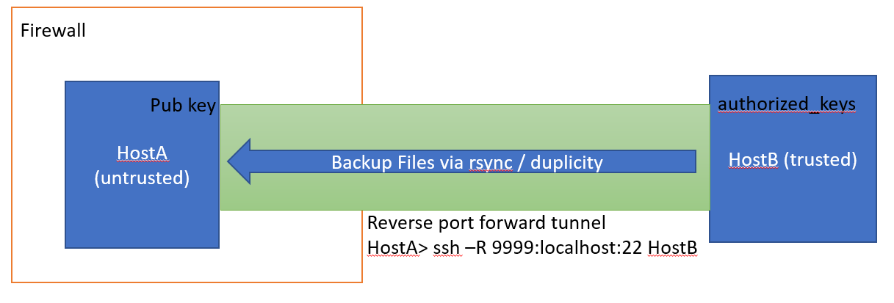

SSH Reverse Port Forwarding With Untrusted Remote Host
tl;dr - safety is provided by setting up a non-priviledged tunnel only user
References
- Discussions
- man pages
- SSH reverse port forwarding explained
- autossh - Automatically restart SSH sessions and tunnels
- the use of
nologin
Problem
Here's my scenario:

- I have a home server (HostB) which is completely within my control.
- I have an off-site machine that can potentially be physically accessed by other people I don't trust (HostA).
I want to do off-site backups (encrypted of course) via duplicity from
HostB to HostA. Because HostA is behind firewall, it can't provide direct
ssh access. So I'll have to do a reverse port
forwarding to expose HostA:22. In order to
reliably do the reverse port forwarding without password, I will add HostA's
public key to HostB's authorized_keys file. Now that can potentially be bad,
because the pub key could be stolen.
However, since the ssh login from HostA -> HostB is only to establish the port forwarding tunnel so HostB can access HostA:22, is there any good way I can restrict the HostA -> HostB ssh connection to only provide the tunnel and nothing else?
Setting Up User For Tunnel Only
After discussing online, I'm aware of the following solution:
-
Create a non-priviledged user without login shell (nologin). Set user home to
/var/...and make it readonly (suggested by obsigna & Jov):pw useradd -n tunnel -c "SSH Tunnel User" -u 9999 -d /var/tunnel -s /usr/sbin/nologin mkdir -m 0500 -p /var/tunnel/.ssh chown -R tunnel:nogroup /var/tunnel chflags -R schg /var/tunnel -
Do a
ChrootDirectoryusingMATCH USERinsshd_configfor extra safety. See this post. -
Use authorized_keys to further restrict the public key:
command="command"no-X11-forwardingpermitopen="host:port"
Tricks & Tools for Port Forwarding
- autossh can be used to create reliable tunnel